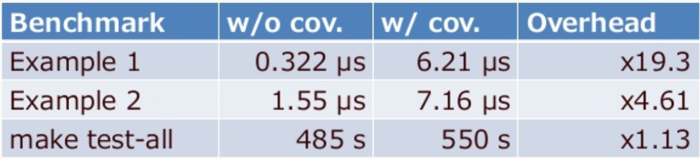

class: center, middle # Actionable Code Coverage ??? - Understanding code coverage - How to turn coverage it into a helpful tool instead of an afterthought --- class: center, middle # Actionable Code Coverage github.com/grosser/ruby-coverage-talk ??? - not just a talk, but repo with runnable examples + markdown slides - a maintainable deep dive for new developers (intro + workflows + limits) --- # Michael Grosser Senior Staff Engineer @ Zendesk<br/> (Hiring in SF/Madison/Dublin/CPH/Sydney) <table> <tr> <td></img></td> <td> </td> <td style="vertical-align: top"> rubygems.org grosser<br/> github.com/grosser<br/> twitter.com/grosser<br/> grosser.it </td> </tr> </table> ??? - job: help other devs, build infrastructure, make them more efficient - build lots of gems for testing + coverage and onboarded giant projects on them --- # Plan - Code Coverage Overview - Actionable Coverage - Hack Forked Coverage - Wishlist for Coverage.so ??? - overview: get everyone onto the same level - action: problems with current approaches, how to improve them, how to migrate projects piecemeal without breaking - fork: how parallel processes can share coverage calculations - wishlist: basics for better tooling --- # Code Coverage Overview - builtin C library, no gems needed - Enable before loading code - Slows down execution --- # Line Coverage <!-- see 01-Internals/coverage_line.rb --> ```Ruby require 'coverage' # -> coverage.so Coverage.start # enable for newly loaded code require_relative 'example' example Coverage.result # disable {"example.rb"=>[1, 1, 0, nil, 1, nil, nil]} ``` ??? - simplest form - result has side-effect of disabling, can use peek_result - 1 = hit once - 0 = never hit - nil = not code (end/else etc) --- # Line Coverage <!-- see 01-Internals/example.rb --> ```Ruby {"example.rb"=>[1, 1, 0, nil, 1, nil, nil]} def example # 1 - Covered, loaded not ran if 1 == 2 # 1 - Covered, ran once "a" # 0 - Not-Covered else # nil 3 == 2 ? "b" : "c" # 1 - Covered, ran once end # nil end # nil ``` ??? - we hit example and the second branch - problem: in else the 3==2 has 2 outcomes, "b" never reached ... should rewrite as *next slide* --- # Line Coverage <!-- see 01-Internals/example_expanded.rb --> ```Ruby {"example.rb"=>[1, 1, 0, nil, 1, 0, nil, 1, nil, nil, nil]} ================= ... if 3 == 2 # 1 - Covered "b" # 0 - Not Covered else # nil "c" # 1 - Covered end # nil ... ``` ??? - enforce via rubocop ? - use branch coverage! 2.5+ --- # Branch Coverage <!-- see 01-Internals/coverage_branch.rb --> ```Ruby require 'coverage' Coverage.start branches: true # Ruby 2.5+ require_relative 'example' example Coverage.result ``` ??? - easy right ? *next slide* NO! --- # Branch Coverage ```Ruby "example.rb"=>{:branches=>{ # type, id, start line, start char, end line, end char [:if, 0, 5, 4, 5, 22]=>{ [:then, 1, 5, 13, 5, 16]=>0, [:else, 2, 5, 19, 5, 22]=>1 }, [:if, 3, 2, 2, 6, 5]=>{ [:then, 4, 3, 4, 3, 7]=>0, [:else, 5, 5, 4, 5, 22]=>1 } ``` ??? - big hash where keys are the branches ... ignore + first 2 items are kind+index ... ignore - only care for last 4 items ... look back at code --- # Branch Coverage <!-- see 01-Internals/example.rb --> ```Ruby # char 4-22 = Y | char 13-16 = N | char 19-22 = Y def example if 1 == 2 "a" else 3 == 2 ? "b" : "c" YYYYYYYYYYYYYYYYYY NNN YYY end end ``` ??? - enough info for simple tooling - downsides: too slow to run in prod to find dead code (oneshot), does not detect ||= / optional params --- # Oneshot Coverage <!-- see 01-Internals/coverage_oneshot.rb --> ```Ruby require 'coverage' Coverage.start oneshot_lines: true # Ruby 2.6+ require_relative 'example' 5.times { example } Coverage.result {"example.rb"=>{:oneshot_lines=>[1, 2, 5]}} ``` ??? - line numbbers not counters - fast: removed after execution - no oneshot_branches --- # Oneshot Coverage <!-- see 01-Internals/example.rb --> ```Ruby def example # Covered if 1 == 2 # Covered "a" # ? else # ? 3 == 2 ? "b" : "c" # Covered end # ? end # ? ``` ??? - bad for automation: only shows the line number that are covered, not uncovered/uncoverable --- # Coverage Performance <table class="table"> <tr><th></th><th>Lines</th><th>Branches</th><th>Oneshot</th></tr> <!-- run 01-Internals/benchmark_overhead.rb with different lines commented in --> <tr><th>Ruby</th><td>50%</td><td>100%</td><td>2%</td></tr> <!-- see 01-Internals/benchmark_overhead.rb with different lines commented in --> <tr><td colspan="4"><pre>50_000_000.times { example }</pre></td></tr> <tr><th>Rails</th><td>0.5%</td><td>2.4%</td><td>0%</td></tr> <tr><td colspan="4"><pre>app.get "/"</pre></td></tr> </table> ??? - to improve performance use `set_trace_func` directly via sampling approach (coverband) --- # Coverage Performance  by @mametter ??? From 2017 RubyKaigii talk https://www.slideshare.net/mametter/an-introduction-and-future-of-ruby-coverage-library --- # Recap - `Coverage.start` = simple lines - `Coverage.start branches: true` = weird but useful - `Coverage.start oneshot_lines: true` = fast but hard to use - `Coverage.result / Coverage.peek_result` --- # Plan - <del>Code Coverage Overview</del> - Actionable Coverage - Hack Forked Coverage - Wishlist for Coverage.so --- # Actionable Coverage - Mindset - Problems - Solution - Migrating --- # Mindset - Not a metric, easy to cheat on <br/>100% coverage != good test - A helper/fallback: <br/> "Did you write a test for that ?"<br/> "Why does it rescue ?"<br/> "What happens when xyz ?" ??? - cheat: use `||` instead of if, only unit test # Problems - Slow feedback - Impossible to reach 100% coverage - Bikeshedding about what % is ok - Complicated setup ??? - slow: have to make PR and wait for hook, run all tests, open browser - 100%: setup code and edge-cases - bike: 100% cannot be reached so we guess, feels like broken window, rewrite a statement to be readable and suddenly it's not covered - setup: install hooks / pay providers / explain to contributors --- # Solution - quick, atomic development feedback - mark intentional gaps to get 100% - simple/local/free setup - fine grained coverage ??? - the solution we need is ... - quick: run a single file, matches a single test, small runtime overhead, exact location, console output - easy to contribute when tests are easy to find - call out gaps explicitly, raise awareness when editing code, 100% avoid broken windows, fail bad PRs - encourage seeking quick local feedback instead of taking a break after PRs - ignore: call out gaps, but keep 100% --- # SingleCov Missing coverage on every 💚 run ```Bash rspec spec/foobar_spec.rb ...... 114 example, 0 failures lib/foobar.rb new uncovered lines introduced (2 current vs 0 configured)", Uncovered lines: lib/foobar.rb:22 lib/foobar.rb:23 ``` ??? - Catch coverage issues before making PRs - Makes PRs fail when coverage is missing --- # SingleCov Automatic bootstrap script to add coverage enforcement for legacy apps ```Ruby SingleCov.covered! uncovered: 42 SingleCov.not_covered! SingleCov.assert_used SingleCov.assert_tested ``` ??? - Stops newly uncovered code and allows slowly working through backlog. - Not-covered for integration tests / shell-out - All configurable to call out gaps explicitly --- # SingleCov - 2-5% runtime overhead on single files, compared to 10-20% for SimpleCov - Branch coverage on ruby 2.5+ (disable via branches: false) - Use with forking_test_runner for per test coverage --- # Migrating Automated onboarding + divide & conquer Inline comments ```Ruby SingleCov.covered! uncovered: 1 == SingleCov.covered! if this_can_never_happen raise # uncovered end ``` --- # Recap - Use `single_cov` + `forking_test_runner` - Stop the bleeding - Divide and conquer --- # Plan - <del>Code Coverage Overview</del> - <del>Actionable Coverage</del> - Hack Forked Coverage - Wishlist for Coverage.so --- # Hack forked coverage - Avoid having to run all tests - Unit tests should cover file under test - Fork to capture per-file coverage ??? - Can still have integration tests, but unit have to cover all code - but forking does not play nice with coverage ... *flip* --- # Hack forked coverage Forking resets coverage <!-- see 03-forked/forked_reset.rb --> ```Ruby require 'coverage' Coverage.start require_relative 'example' example fork { puts Coverage.result } {"example.rb"=>[0, 0, 0, nil, 0, nil, nil]} ``` ??? Makes full coverage unreachable since for example loading the class cannot be done again --- # Hack forked coverage ```Ruby # ... load everything stored = Coverage.peek_result fork do # ... test result = Coverage.result.map do |file, cov| old = stored[file] cov.each_with_index.map do |c, i| old[i] ? old[i] + c : c end end end {"example.rb"=>[1, 2, 1, nil, 1, nil, nil]} ``` --- # Hack forked coverage ```Bash forking-test-runner test/ --merge-coverage ``` - handles edge-cases - preloads AR fixtures / helpers etc - handles branch coverage ??? - Gem I built that integrates well with single_cov and makes CI coverage same as local - maybe in the future oneshot --- # Recap - fork and coverage don't play nice - use peek_result to get results in-between --- # Plan - <del>Code Coverage Overview</del> - <del>Actionable Coverage</del> - <del>Hack forked coverage</del> - Wishlist for Coverage.so --- # Wishlist for Coverage.so Adding coverage in forks without hacks <!-- see 04-wishlist/adding.rb --> ```Ruby require 'coverage' Coverage.start add_on_fork: true require_relative 'example' example 1 fork do example 2 Coverage.result end ``` ??? Especially for branches lots of logic --- # Wishlist for Coverage.so - Oneshot useable for coverage calculations - Oneshot branches <!-- see 04-wishlist/onheshot.rb --> ```Ruby require 'coverage' Coverage.start oneshot_lines: :boolean require_relative 'example' example 1 Coverage.result {"example.rb"=>{:oneshot_lines=>[true, false, nil, true]}} ``` ??? Could simply grep false and report on that --- # Wishlist for Coverage.so Coverage for default parameters ```Ruby def foo(a = default) puts a end ``` --- # Wishlist for Coverage.so Coverage for logical operators ```Ruby # covered success || raise("Ooops") # not covered raise("Ooops") unless success ``` --- # Wishlist for Coverage.so Path coverage ```Ruby a = a ? : 1 : 2 a = a ? : 3 : 4 ``` 4 Paths through this code 1/3 + 1/4 + 2/3 + 2/4 ??? super annoying to get 100% coverage but could be interesting for security/complicated things --- # Recap - make fork not wipe coverage - make oneshot automatable - oneshot branches - default params coverage - logical operators coverage - path coverage --- class: center, middle # Thank you! <table> <tr><td>github.com/grosser/</td><td style="text-align: left">ruby-coverage-talk</td></tr> <tr><td></td><td style="text-align: left">single_cov</td></tr> <tr><td></td><td style="text-align: left">forking_test_runner</td></tr> <tr><td></td><td style="text-align: left">maxitest</td></tr> <tr><td></td><td style="text-align: left">testrbl</td></tr> </table> ??? Slides / examples / PRs welcome